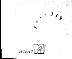
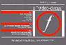

Author (structure and content © 1997-2005):
Dennis Remmer - Shack up baby, shack up...
Refer main site (www.factoryrecords.info) for credits.
Guess Who?
Contents:
7": UK 1979 (Factory FAC 5) 3:14 All Night Party 3:11 The Thin Boys ~ FAC 5 Lenny-1 ~ FAC 5 Anthony-2
Additional Notes:
Limited edition of 5000, 1000 of which have sticker saying 'ltd edition on poor quality vinyl'.
Contents:
7": BL 1980 (Factory Benelux / Crepescule FAC BN 1-004) 3:13 Shack Up 2:26 And Then Again (Live) 7": UK 1986 (Factory 7 FAC 135) * 7": AU 1986 (Factory 7 FAC 135) * 7": CA 1986 (Factory FACT 167) */** 7": SP 1986 (??? DLM-12578-86) 3:13 Shack Up 3:11 The Thin Boys * Included as a bonus 7" with The Old & The New. ** Canadian-only release and number.
Additional Notes:
Contents:
12": UK 1980 (Factory FAC 22)
[Hipside]
6:00 Flight
[Flipside]
2:36 Blown Away
3:09 And Then Again
~ King Clone
~ The Clone Ranger
12": UK 1980 (Factory FAC 22) *
[Hipside] **
2:36 Blown Away
[Flipside] **
6:00 Flight
3:09 And Then Again
~ Too Young To Know
~ Too Wild to Care
* Identified as Flight, although A-side and front cover
is Blown Away. Probably an odd pressing. Vinyl appears
red when seen through light.
** These are based on the matrix, although the centre label
has the following contents listed: Flipside: Blown Away,
Hipside: Flight / And then Again.
Contents:
12": US 1981 (Factory US FACUS 4) [flipside] 2:45 Do the Du (casse) 3:00 The Fox [hipside] 3:07 Shack Up 2:04 Son and Heir
Contents:
2x12": AU 1981 (Factory Australasia / Gap FACDP 1004) 2x12": IT 1981 (Factory / Base FACT 42) 2x12": FR 1981 (Virgin ???) 2x12": NZ 1981 (RTC FAC 42) [disc one] 6:00 Flight 2:36 And Then Again (version) 3:09 Blown Away [disc two] 2:45 Do the Du 3:00 The Fox 3:07 Shack Up 2:04 Son + Heir
Additional Notes:
Contents:
12": UK 1981 (Factory FAC 52) 4:09 Waterline 5:19 Funaezekea ~ Wet! ~ Hot
Contents:
12": BL 1982 (Factory Benelux FBN 17) 12": JP 1983 (Crepuscule Au Japon/Shinseido Sirius SC-54) 6:50 Guess Who? 6:50 Guess Who? (Part Two) ~ A Leggy Woman They Say
Contents:
7": UK 1982 (Factory FAC 62-7)
3:53 Knife Slits Water
3:25 Tumba Rumba
~ The Sound Sound Goes Around Around
~ Zippy
12": US 1982 (Mango Records MLPS-7802)
12": UK 1982 (Factory FAC 62-12) *
9:44 Knife Slits Water
9:40 Kether Hot Knives (Mix in Special)
* Possibly catalogued as FAC 62T.
Additional Notes:
Also allocated an Of Factory New York catalogue number (OFNY 2).
Contents:
7": UK 1983 (Factory FAC 72/7) [Promo] 4:00 I Need Someone Tonight (Edit) 4:28 Don't You Worry 'Bout a Thing 12": UK 1983 (Factory FAC 72-12) 12": AU 1983 (Factory Australia / CBS FAC 72) 12": NZ 1983 (EMI GOOD 37) 5:34 I Need Someone Tonight 4:28 Don't You Worry 'Bout a Thing
Additional Notes:

Contents:
7": UK 1984 (Factory FAC 112P) [Promo] * ?:?? Life's A Scream (Edit) ?:?? There's Only This (Edit) 12": UK 1984 (Factory FAC 112) ** [Dance Side] 6:32 Life's A Scream [Trance Side] 4:17 There's Only This * Includes photo and ACR envelope with biography. ** Sleeve issued with paper sash, known as an 'obi'.

Contents:
12": BL 1985 (Factory Benelux FBN 32) 12": FR 1985 (Virgin 80199/PM 132F) 12": JP 1985 (Crepuscule Au Japon/Shinseido Sirius SC-??) 6:08 Brazilia 5:57 Brazilia (Extended Mix)
Additional Notes:
Sleeve issued with paper sash, known as an 'obi'.
Contents:
7": UK 1985 (Factory FAC 128) [Promo] 3:23 Wild Party (Edit) 3:54 Sounds Like Something Dirty (Edit) CS: UK 1985 (Factory FAC 128C) 4:12 Wild Party 6:52 Sounds Like Something Dirty 3:30 Life's a Scream (Live) * 3:43 Force (Live) * 3:40 Wild Party (Live) * 12": UK 1985 (Factory FAC 128) 4:12 Wild Party 6:52 Sounds Like Something Dirty ~ What Do You Think Of That Like * Live tracks from BBC Saturday Live session.

Contents:
12": UK 1986 (Factory FAC 168)
[North]
5:54 Mickey Way (The Candy Bar)
[South]
4:27 Inside
7:10 Si Firmi O Grido
Contents:
12": IT 1986 (Materiali Sonori MASO 70004) 4:28 Bootsy 5:29 Fever 103 (degrees) 5:07 The Runner 3:57 Inside
Additional Notes:
Apparently different recordings to those on Force.

Contents:
7": AU 1987 (Factory Australia / CBS FAC 1667)
3:35 Bootsy
4:27 Inside
12": AU 1987 (Factory Australia / CBS FAC 16612)
6:41 Bootsy (Remix) *
4:50 Mickey Way
* Remixed by Robert Racic.
Contents:
7": UK 1989 (A&M ACR 514) 7": AU 1989 (A&M K906) ?:?? The Big E (I Won't Stop Loving You) ?:?? Love Is The Way (Instrumental) 12": UK 1989 (A&M ACRY 514) CDS: UK 1989 (A&M ACRCD 514) CDS: JP 1989 (A&M / Pony Canyon PCDY-10005) [Promo] * ?:?? The Big E (I Won't Stop Loving You) ?:?? Love Is The Way (Instrumental) ?:?? Day 2 * 3" CD Single in long sleeve.
Additional Notes:
Contents:
7": UK 1989 (A&M ACR 517) 7": SP 1989 (Polygram 873 220-7) [promo] 3:49 Backs To The Wall 5:18 Be What You Wanna Be 12": UK 1989 (A&M ACRY 517) CDS: UK 1989 (A&M ACRCD 517) ?:?? Backs To The Wall (Frankie Knuckles Remix) ?:?? Backs To The Wall (Frankie Knuckles Instrumental) 5:18 Be What You Wanna Be
Contents:
7": UK 1989 (A&M ACR 534) 4:00 Your Blue Eyes * 4:28 Thin Grey Line 12": UK 1989 (A&M ACRY 534) CDS: UK 1989 (A&M ACRCD 534) ** 4:00 Your Blue Eyes * 4:28 Thin Grey Line 4:20 Coldest Days 6:48 Your Blue Eyes (Extended) ** 12": UK 1990 (A&M ???) *** 6:48 Your Blue Eyes (Extended) 4:28 Thin Grey Line * Remixed by Stuart Bruce *** Apparently this rerelease exists, but need to confirm contents.
Contents:
7": UK 1990 (A&M ACR 550) 7": UK 1990 (A&M ACRDJ 550) [Promo] ?:?? Good Together ?:?? Be What You Wanna Be
Additional Notes:
The 12"/CDS version of this single exists as the Four for the Floor EP release..
Contents:
12": UK 1990 (A&M ACRY 550) [promo] * CDS: UK 1990 (A&M ACRCD 550) 5:09 Good Together 4:39 Spirit Dance 5:01 Be What You Wanna Be 4:54 Tribeca 12": UK 1990 (A&M ACRY 550DJ) [promo] ** 8:05 Good Together 5:35 Spirit Dance 5:33 Be What You Wanna Be 6:05 Tribeca * With information sheet ** Appears to be a different release with mixes as per MCR - need confirmation.
Additional Notes:
Contents:
7": UK 1990 (A&M ACR 540) 3:48 Won't Stop Loving You 4:26 The Big E 7": AU 1990 (Polygram 390 581-7) 3:48 Won't Stop Loving You * 3:50 Won't Stop Loving You (Another Version) ** 7": UK 1990 (A&M ACRR 540) 7": UK 1990 (A&M ACRDJ 540) [Promo] CS: UK 1990 (A&M ACRMC 540) 3:41 Won't Stop Loving You (Bernard Sumner Mix) 3:56 Won't Stop Loving You (Norman Cook Mix) 12": UK 1990 (A&M ACRY 540) 6:48 Won't Stop Loving You (Bernard Sumner Mix) 4:48 Repercussions 4:02 Love Is The Way (Instrumental) 12": UK 1990 (A&M ACRY 540) [Promo] 6:48 Won't Stop Loving You (Bernard Sumner Mix) 3:56 Won't Stop Loving You (Norman Cook Mix) ?:?? Won't Stop Loving You (Instrumental) CDS: UK 1990 (A&M ACRCD 540) 3:48 Won't Stop Loving You (Bernard Sumner Remix Edit) 4:48 Repercussions 4:02 Love Is The Way (Instrumental) 6:48 Won't Stop Loving You (Bernard Sumner Mix) * Actually Bernard Sumner Remix Edit (same as BS Mix?) ** Actually Norman Cook Mix
Additional Notes:
Contents:
7": UK 1990 (A&M ACR 590) [promo] 4:04 Shack Up Man ?:?? Shack Up Machine 12": UK 1990 (A&M ACRYDJ 590) [promo] 5:31 Shack Up Machine 4:04 Shack Up Man 5:35 Shack Up Norman Cook Mix 4:16 Party Up Shack Up 12": UK 1990 (A&M ACRY 590) [unissued] CS: UK 1990 (A&M ACRMC 590) [unissued] CDS: UK 1990 (A&M ACRCD 590) [unissued]
Additional Notes:
This was an aborted commercial release of new versions / remixes of Shack Up (not the same as this one).
Promotional copies and test-pressings were released to radio and club DJ's.
Contents:
7": UK 1991 (Robs Records 7ROB2) 4:15 Loosen Up Your Mind 4:03 The Planet 12": UK 1991 (Robs Records 12ROB2) 6:28 Loosen Up Your Mind 4:50 The Planet CDS: UK 1991 (Robs Records CDROB2) 4:15 Loosen Up Your Mind (7") 4:50 The Planet (12") 6:28 Loosen Up Your Mind (12") 4:22 The Planet (CD Edit)
Additional Notes:
Contents:
7": UK 1991 (Robs Records 7ROB5) 3:35 27 Forever 4:35 27 Forever (Loose Mix) 12": UK 1991 (Robs Records 12ROB5) 4:35 27 Forever (Loose Mix) 4:48 27 Forever (Vocal Remix) 5:27 27 Forever (Instrumental Dub) 12": UK 1991 (Robs Records 12ROB5R) 12": UK 1991 (Robs Records 12ROB5R) [white label promo] 6:11 27 Forever (Da Silver's Bubble Bath Mix) 5:54 27 Forever (Da Silver's Soundstation Fix Mix) CDS: UK 1991 (Robs Records CDROB5) 3:35 27 Forever (Seven Inch) 4:48 27 Forever (Vocal Remix) 5:27 27 Forever (Instrumental Dub) 4:50 27 Forever (Higher Plane Edit)
Additional Notes:
Contents:
7": UK 1992 (Robs Records 7ROB6) [promo] 3:34 Mello (M People Mix) 12": UK 1992 (Robs Records 12ROB6) 3:34 Mello (M People Mix Pt. 1) 5:17 Mello (M People Mix Pt. 2) ?:?? Mello * 6:05 Mello (Soundstation Mix) 12": UK 1993 (Robs Records ROB6R) ** 6:50 Mello'd Up 6:50 Mello Dub 5:55 27 Forever (Testimonial Mix) 4:50 Mello (303 Dub) CDS: UK 1992 (Robs Records CDROB6) 3:34 Mello (M People Mix Pt. 1) 5:17 Mello (M People Mix Pt. 2) 5:29 Mello (Fon Mix) 6:05 Mello (Soundstation Mix) * Possibly the Fon Mix, need to confirm ** Limited edition of 1000
Additional Notes:
Contents:
12": UK 1993 (Robs Records 12ROB11)
5:15 Turn Me On ("O" Mix)
7:38 Turn Me On (Tackle Mix)
5:11 Turn Me On (Primetime Mix)
8:29 Turn Me On (M21 Mix)
CDS: UK 1993 (Robs Records CDROB11)
CDS: UK 1993 (Robs Records CDROB11) [promo]
4:01 Turn Me On (7" Edit)
5:15 Turn Me On ("O" Mix)
7:38 Turn Me On (Tackle Mix)
5:11 Turn Me On (Primetime Mix)
8:29 Turn Me On (M21 Mix)
Additional Notes:
Featuring Denise Johnson.
Contents:
12": UK 1993 (Robs Records 12ROB18) 6:58 Tekno (Way Out West Mix) 5:00 Tekno (Lip Mix)
Contents:
7": SP 1994 (Polygram 301925) ?:?? Shack Up (Version?) ?:?? : 12": UK 1994 (Creation CRE151T) 12": UK 1994 (Creation CRE151T) [Promo] 4:21 Shack Up (Radio Edit) 6:06 Shack up (Work Mix) 4:12 Shack Up (Wipe Out Mix) 6:01 Life's A Scream (Shaven Not Stirred Mix) 12": UK 1994 (Creation CTP151) [Promo] * 7:28 Shack Up (MacCready & Dasilva Mix) 5:56 Shack Up (12" Vox Mix) CDS: UK 1994 (Creation CRESCD151) CDS: UK 1994 (Creation CRESCD151P) [Promo] CDS: FR 1994 (Creation SCR 6593742) 4:21 Shack Up (Radio Edit) 6:06 Shack up (Work Mix) 4:12 Shack Up (Wipe Out Edit) 6:01 Life's A Scream (Shaven Not Stirred Mix) * Limited edition of 577 (!) copies
Additional Notes:
Contents:
CDS: UK 1997 (Robs Records CDROB48) 5:27 Samba 123 7:10 Yeah Boy 6:06 Desire 5:45 Funk Off
Contents:
12": UK 1997 (Robs Records 12ROB52) CDS: UK 1997 (Robs Records CDROB52) * 6:43 Samba 123 (Fila Brazilia Remix) ?:?? Yeah Boy (Sons of Samarkand Remix) ?:?? Yeah Boy (DJ Die Remix) * Contents to be confirmed.
Contents:
7": UK 2002 (Soul Jazz Records SJR60-7) *
[Hipside]
2:43 Do the Du
[Flipside]
2:05 Skipscada
Additional Notes:
Limited edition sampler 7" for the Early compilation.
Both tracks taken from John Peel sessions (1979 and 1981 respectively)
300 copies only
Contents:
12": UK 2002 (23 Records T019) [Promo] * 12": UK 2003 (23 Records T019) CD: UK 2003 (23 Records TCDS019) ?:?? Starlight (Fila Brazillia Mix) ?:?? Wild Party (Fila Brazillia Remix) ?:?? I'm A Very Busy Man (Fila Brazillia Mix) * White label, 500 copies only
Additional Notes:

Contents:
CS: UK 1980 (Factory FACT 16) *
CS: UK 1985 (Factory FACT 16C) [boxed]
CD: UK 1994 (Creation CREV022CD)
CD: UK 2004 (Universal Sound / Soul Jazz Records USCD20) **
LP+12": UK 2004 (Universal Sound / Soul Jazz Records USLP20) ***
[The Graveyard] ****
2:47 Do The Du (casse)
2:17 Faceless
2:49 Crippled Child
3:16 Choir
3:25 Flight
2:09 I Feel
2:25 Strain
[The Ballroom] *****
3:26 All Night Party
3:36 Oceans
3:13 The Choir
3:05 The Fox
2:15 Suspect
4:56 Flight
3:27 Genotype/Phenotype
[Bonus Tracks] **/***
3:14 And Then Again
2:11 The Thin Boys
* First 400 copies in orange pouch with insert. Later copies in
blue, green, brown, red, and grey pouches.
*** Tracks pressed as a bonus 12" packaged with the main LP.
**** Produced by Martin Hannett at Graveyard Studios, September 15/16 1979.
***** All titles on this side recorded live by Jeff Hooper and Tony
Wilson at The Electric Ballroom, London, October 26, 1979.
Additional Notes:

Contents:
LP: UK 1981 (Factory FACT 35)
LP: IT 1981 (Base Records FACT 35)
LP+12": UK 2004 (Universal Sound / Soul Jazz Records USLP21) *
CD: JP 1989 (Factory / Nippon-Columbia 25CY-3103) **
CD: UK 1994 (Creation CREV023CD)
CD: UK 2004 (Universal Sound / Soul Jazz Records USCD21) ***
3:45 Felch
2:28 My Spirit
5:53 Forced Laugh
2:51 Choir
7:49 Back to the Start
3:46 The Fox
3:23 Loss
3:30 Oceans
12:45 Winter Hill
3:34 Abracadubra */***
?:?? Sommadub */***
* Included as bonus 12" with LP rerelease on Soul Jazz label. Refer also Sir Horatio 12".
** With obi and bio/discography insert.
~ I Could Kneel With My Arms Open
Additional Notes:
Contents:
LP: UK 1982 (Factory FACT 55) * LP: FR 1982 (Virgin 201901) LP: IT 1982 (Base Records FACT 55) LP: PR 1982 (ViMusica VFACT 111-21) LP+12": UK 2004 (Universal Sound / Soul Jazz Records USLP22) ** CD: JP 1989 (Factory / Nippon-Columbia 25CY-3104) *** CD: UK 1994 (Creation CREV024CD) CD: UK 2004 (Universal Sound / Soul Jazz Records USCD22) **** 3:53 Lucinda 2:52 Crystal 2:57 Gum 7:31 Knife Slits Water 2:08 Skipscada 6:09 Day One 3:41 Rub Down 3:43 Rialto 3:58 Below the Canal 5:19 Funaezekea **/**** 9:40 Kether Hot Knives (Mix in Special) **/**** * Contains Insert. ** Included as bonus 12" with LP rerelease on Soul Jazz label. *** With obi and bio/discography insert. ~ C.B.E. ~ All the Best Egghead!
Additional Notes:
Contents:
LP: UK 1982 (Factory FACT 65)
LP: NE 1982 (Dureco VR 22426)
LP: IT 1982 (Base Records FACT 65)
CD: JP 1989 (Factory / Nippon-Columbia ???) *
CD: UK 1994 (Creation CREV025CD)
CD: UK 2005 (LTM LTMCD 2438) **
5:05 Touch
3:46 Saturn
3:51 Hot Knights
5:11 I'd Like To See You Again
3:10 Show Case
3:51 Sesamo Apriti - Corco Vada
6:25 Axis
4:58 Guess Who
3:53 Knife Slits Water (7" Mix) **/***
5:34 I Need Someone Tonite **/****
3:25 Tumba Rumba **/***
4:00 Guess Who? (FBN Remix) **/*****
9:44 Knife Slits Water (12" Mix) **/******
* With obi and bio/discography insert.
*** From FAC 62-7
**** From FAC 72
***** From Factory Benelux's Greatest Hits
****** From FAC 62-12
~ Don't You Dance
~ You Missed Your Chance

Contents:
LP: UK 1986 (Factory FACT 135) *
LP: BE 1986 (Factory Benelux FACT 135) *
LP: CA 1986 (Polygram Canada FACT 135) **
LP: AU 1986 (Factory Australia / CBS FACT 135) *
LP: IT 1986 (Base Records FACT 135)
LP: JP 1986 (Factory / Nippon-Columbia YX-7383-AX) ***
[East]
6:04 Flight
2:46 Do the Du
2:37 And Then Again
3:02 The Fox
3:10 Blown Away
[West]
6:53 Sounds Like Something Dirty
6:32 Life's A Scream
4:17 There's Only This
4:15 Wild Party
~ Stonked Again
~ One More Time
CS: UK 1986 (Factory FACT 135C) [boxed] ***
6:04 Flight
2:46 Do the Du
2:37 And Then Again
3:02 The Fox
3:13 Shack Up
3:11 The Thin Boys
6:53 Sounds Like Something Dirty
6:32 Life's A Scream
4:17 There's Only This
4:15 Wild Party
CD: JP 1989 (Factory / Nippon-Columbia 25CY-3105) ****
CD: UK 1994 (Creation CREV026CD)
6:04 Flight
2:46 Do the Du
2:37 And Then Again
3:02 The Fox
3:10 Blown Away
3:13 Shack Up
6:53 Sounds Like Something Dirty
6:32 Life's A Scream
4:17 There's Only This
4:15 Wild Party
3:11 The Thin Boys
* Came packaged with 7 FAC 135.
** Came packaged with Canadian pressing of bonus 7" (see here).
*** With inserts.
**** With bio/discography insert.
Additional Notes:
Contents:
LP: UK 1986 (Factory FACT 166)
LP: BR 1986 (Stiletto 992525-1)
LP: FR 1986 (Virgin 70478/PM 132)
LP: IT 1986 (Base Records FACT 166)
LP: AU 1987 (Factory Australia / CBS FACT 166)
LP: JP 1987 (Factory / Nippon-Columbia YX-7421-AX)
[North]
3:40 Only Together
4:38 Bootsy
5:13 Fever 103
4:57 Naked and White
[South]
4:50 Mickey Way
3:59 And Then She Smiles
5:00 Take Me Down
4:53 Anthem
CD: UK 1986 (Factory FACD 166) *
CD: AU 1986 (Factory Australia / CBS FACD 166) *
CD: JP 1986 (Factory / Nippon-Columbia 25CY-3106) *
CD: UK 1994 (Creation CREV027CD) *
CS: UK 1986 (Factory FACT 166C) [boxed] **
3:40 Only Together
4:38 Bootsy
5:13 Fever 103
4:57 Naked and White
4:50 Mickey Way
3:59 And Then She Smiles
5:00 Take Me Down
4:53 Anthem
4:53 Nostromo A Gogo
4:27 Inside
7:10 Si Firmi O Grido *
2xLP: AU 1987 (Factory Australia / CBS FACT 166) ***
[North]
3:40 Only Together
4:38 Bootsy
5:13 Fever 103
4:57 Naked and White
[South]
4:50 Mickey Way
3:59 And Then She Smiles
5:00 Take Me Down
4:53 Anthem
[East]
6:04 Flight
2:46 Do the Du
2:37 And Then Again
3:02 The Fox
3:10 Blown Away
3:13 Shack Up
[West]
6:53 Sounds Like Something Dirty
6:32 Life's A Scream
4:17 There's Only This
4:15 Wild Party
3:11 The Thin Boys
~ The Way We Split Our Genes
~ The Way We Split Our World
** With inserts.
*** Initial copies came with The Old & The New, packaged
in a unique? inner sleeve within the Force sleeve.
Additional Notes:
Contents:
CS: UK 1985 (ACR) * LP: UK 1987 (Castle Communications DOJOLP 47) CD: UK 1987 (Castle Communications DOJOCD 47) CD: UK 2005 (Melodic Reissues MELOCD 029CD) CD: UK 2005 (Melodic Reissues MELOCD 029CD) [Promo] 7:10 Sounds Like Something Dirty 3:51 The Fox 3:13 Shack Up 3:31 Life's A Scream 4:28 Wild Party 5:42 Flight 2:53 And Then Again 3:59 Touch 5:23 Knife Slits Water 7:12 Si Fermir O Grido * Tape sold at gigs in the mid-80's.
Additional Notes:
All tracks recorded live in America 1985.
Contents:
LP: UK 1989 (A&M AMA 9008 / 397 011-1) CS: UK 1989 (A&M AMC 9008) * CD: UK 1989 (A&M 397 011-2) * CD: JP 1989 (A&M / Pony Canyon PCCY-10013) */** 4:36 Your Blue Eyes 4:17 Your Little World 4:42 The Big E 5:04 God's Own Girl 4:16 Love Is The Way 5:12 Backs to the Wall 4:56 River's Edge 5:46 Every Pleasure 4:18 Coldest Days 4:32 Good Together */** 4:47 Repercussions ** 4:56 2000 a/: ** *** With Japanese lyric sheet / biography / discography insert.
Additional Notes:
Contents:
LP: UK 1990 (A&M 397 057-1) CD: UK 1990 (A&M 397 057-2) CD: JP 1990 (A&M / Pony Canyon PCCY-10169) 5:35 Spirit Dance 6:47 Won't Stop Loving You 7:50 BTTW 90 5:17 Be What You Wanna Be 8:02 Good Together 4:23 Funky Heaven 6:02 Tribeca 5:35 Repercussions Live
Additional Notes:
Remixed versions.
Contents:
LP: UK 1992 (Robs Records LROB20) CD: UK 1992 (Robs Records CDROB20) 4:55 Manic 5:49 Turn Me On 5:12 Mello 5:36 Wonder Y 4:55 Up In Downsville Pt. 1 4:32 27 Forever 4:15 Tekno 4 An Answer 4:55 Salvador's (Fish) 2:39 Up In Downsville Pt. 2 6:09 27 Forever (Jon Dasilva Remix) 5:02 Mello (M People Remix) CS: UK 1992 (Robs Records ??ROB20) [Side 1] 4:55 Manic 5:49 Turn Me On 5:12 Mello 5:36 Wonder Y 5:02 Mello (M People Remix) [Side 2] 4:55 Up In Downsville Pt. 1 4:32 27 Forever 4:15 Tekno 4 An Answer 4:55 Salvador's (Fish) 2:39 Up In Downsville Pt. 2 6:09 27 Forever (Jon Dasilva Remix)
Contents:
2x12": UK 1994 (Creation CRELP159B) *
5:57 Shack Up (12" Vox)
5:36 Flight (Massey Mix)
6:17 The Fox (MacSilva Mix)
7:19 Blown Away (Puffin'stuff Mix)
5:30 Touch (Primetime Mix)
7:14 Life's A Scream (Emergency Ward 10 Mix)
5:59 Mickey Way (Manchester City Mix)
5:36 Wild Party (Way Out West Mix)
LP: UK 1994 (Creation CRELP159)
CS: UK 1994 (Creation C-CRE159) **/***
CD: UK 1994 (Creation CRECD159) **
CD: UK 1994 (Creation CRECD159P) [Promo] **
4:19 Shack Up (Radio Edit)
5:36 Flight (Massey Mix)
6:17 The Fox (MacSilva Mix)
5:36 There's Only This (Sub Sub's Rainy City Mix)
5:59 Mickey Way (Manchester City Mix)
5:30 Touch (Primetime Mix)
5:36 Wild Party (Way Out West Mix)
7:14 Life's A Scream (Emergency Ward 10 Mix)
7:19 Blown Away (Puffin'stuff Mix) **
4:14 Bootsy (The Swingfire Mix) **
6:10 Si Firmir O Grido (Bandini Bimba Mix) **
* A DJ release with tracks at louder volume. Limited edition of 1000
in plain white gatefold sleeve with sticker.
*** Press releases exist which suggest that there is also a Waterline remix
(by Moist) on the tape, and space exists on side 2 for it, although
a copy with it included is yet to be confirmed.
Additional Notes:
Contents:
2x12": UK 1994 (Creation CREV013LP) * CS: UK 1994 (Creation CREV013LP) [promo] ** CS: UK 1994 (Creation CREV013MC) 2:46 Du The Du 5:53 Forced Laugh ** 7:31 Knife Slits Water 3:51 Hot Knives *** 6:53 Sounds Like Something Dirty 5:13 Fever 103 ?:?? There's Only This **** * Limited edition of 1000 ** Listed as "Forced Last" on promo cassette *** Should be "Hot Knights"? **** Which version? To be confirmed.
Additional Notes:
Contains 1 track from each Factory album.
Contents:
CD: UK 1997 (Robs Records CDROB50) 4:59 Listen to the Sound 6:15 Some Day 4:54 Your on Your Own 6:00 Waiting for You 6:59 Yeah Boy 5:11 Sister Brother 6:05 Desire 5:27 Samba 123 5:47 Pole 6:07 Do Du Beep 5:48 Golden Balls 5:34 Funk Off 5:01 Groov(E)
Contents:
2xLP: UK 2002 (Soul Jazz Records SJRLP60)
2xCD: UK 2002 (Soul Jazz Records SJRCD60) *
CD: UK 2002 (Soul Jazz Records SJRCD60PROMO) [Promo]
2:51 Do the Du
6:04 Flight
4:08 Waterline
3:16 Shack Up
3:06 The Fox
3:13 Blown Away
3:05 Gum
6:36 Life's A Scream
2:10 Skipscada
7:35 Knife Slits Water
6:57 Sounds Like Something Dirty
5:06 Touch
3:48 Saturn
[Bonus CD] *
3:14 All Night Party **
2:20 Faceless ***
2:43 Do the Du ****
3:49 All Night Party ****
3:16 Flight ****
3:07 Choir ****
2:05 Skipscada *****
3:47 Felch ******
3:34 Abracadubra *******
2:35 Tumba Rhumba ********
3:24 Si Fermir O Grido *********
11:51 [Tribeca Film] **********
* CD sub-titled "B-Sides, Sessions, Rarities & Film".
Audio contents also released as 'B-Sides, Sessions & Rarities' 10"
** Original 7" single
*** From Graveyard & Ballroom
**** John Peel session 1979
***** John Peel session 1981
****** Original NYC Mix
******* From Sir Horatio 12"
******** From Knife Slits Water 7" single
********* From Touch cassette
********** A film by Michael Shamberg of ACR in NYC, 1980
Contents:
2x10": UK 2002 (Soul Jazz Records SJR65)
3:14 All Night Party *
2:20 Faceless **
2:43 Do the Du ***
3:49 All Night Party ***
3:16 Flight ***
3:07 Choir ***
2:05 Skipscada ****
3:47 Felch *****
3:34 Abracadubra ******
2:35 Tumba Rhumba *******
3:24 Si Fermir O Grido ********
* Original 7" single
** From Graveyard & Ballroom
*** John Peel session 1979
**** John Peel session 1981
***** Original NYC Mix
****** From Sir Horatio 12"
******* From Knife Slits Water 7" single
******** From Touch cassette
Additional Notes:
Limited to 1000 copies only.
Contents also released as bonus CD with 'Early' compilation.
Contents:
CD: UK 2005 (LTM LTMCD2443)
?:?? Felch
?:?? Oceans
?:?? And Then Again
?:?? Loss
?:?? Forced Laugh
?:?? My Spirit
?:?? Winter Hill
2:26 And Then Again *
3:20 Felch **
* From FAC BN 1-004
** From the From Brussels With Love compilation
Additional Notes:
Recorded on tour in Holland on 26 October 1980.
CD includes detailed sleevenotes by Larry Cassidy of Section 25.
Artwork based on the Benoit Hennebert design for FAC BN 1-004.
Contents:
CD/MP3: UK 2005 (Urbanite.co.uk) ?:?? TBA
Additional Notes:
Recorded live at the Rob Gretton Memorial Concert, May 2004.
Contents:
CS: BL 1980 (Crepuscule TWI 007)
CS: BL 1982 (Crepuscule TWI 007)
LP: JP 1983 (Crepuscule Au Japon/Shinseido Sirius TWI 008/SC-10)
2xLP: BL 1983 (Crepuscule TWI 008)
2xLP: BL 1986 (Crepuscule TWI 007)
3:20 Felch
Additional Notes:
Live recording, source unknown
First edition (1980) with a booklet in PVC wallet (some copies with blue labels, and some copies including a badge!?). Second edition in regular tape box, and different artwork.
Contents:
CS: UK 1983 (Touch M2)
3:24 Si Fermir Ogrido
Additional Notes:
In pouch with inserts.
Contents:
LP: BL 1983 (Factory Benelux FBN 27)
LP: JP 1984 (Crepuscule Au Japon/Shinseido Sirius SC-59)
4:00 Guess Who? (Remix)
~ A Merry Note
~ For Xmas Toughts [sic]
Additional Notes:
Remixed by Jean Marie Salun.
Contents:
2xLP: JP 1984 (Crepuscule Au Japon/Shinseido Sirius SC-1004/5-L)
3:03 Shack Up
Contents:
LP: UK 1985 (Sweatbox SAM 006)
?:?? Sounds Like Something Dirty (ACR Remix)
Additional Notes:
LP in embossed plastic wallet with magazine and ACR interview
Contents:
LP: US 1985 (MCA MCA6162)
?:?? Wild Party
Contents:
LP: BL 1986 (Crepuscule TWI 646)
3:11 Shack Up
Additional Notes:
With insert and inner bag.
Contents:
LP: US 1987 (Factory US FACTUS 17)
CS: US 1987 (Factory US FACTUS 17C)
LP: AU 1987 (Factory Australia / CBS FACTUS 17)
3:57 And Then She Smiles
Contents:
CD: IT 198? (Materiali Sonori MASOCD 90001) 5:07 The Runner 3:57 Inside
Contents:
LP: UK 1990 (Strange Fruit SFRLP 20) CD: UK 1990 (Strange Fruit SFRCD 20) ?:?? Do The Du (casse)
Additional Notes:
Recorded for 1979 John Peel show.
Contents:
CS: US 1990 (A&M 75021 5339 4) 4:42 Won't Stop Loving You (Sumner Mix)
Contents:
CD: BL 1990 (Crepuscule TWI 937-2) [promo] 3:13 Shack Up
Additional Notes:
Limited edition promo/gift, celebrating Crepescule's 10th Anniversary.

Contents:
LP: UK 1991 (Factory FACT 325) * CD: UK 1991 (Factory FACD 325) CS: UK 1991 (Factory FACT 325C) ** 2:47 Do The Du * Sleeve issued with paper sash, known as an 'obi'. ** Issued in a special wrapper.
Additional Notes:
A compilation of the work of Martin Hannett, with liner notes by C.P. Lee.
Contents:
LP: UK 1991 (Factory FACT 314) CD: UK 1991 (Factory FACD 314) CS: UK 1991 (Factory FACT 314C) 3:14 All Night Party 6:05 Flight
Additional Notes:
Full title "Palatine - The Factory Story/Vol. 1/1979-1982/Tears In Their Eyes"
Part of the FACT 400 package, or available separately.
Contents:
LP: UK 1991 (Factory FACT 324) CD: UK 1991 (Factory FACD 324) CS: UK 1991 (Factory FACT 324C) 3:14 Shack Up 2:09 Skip Scada
Additional Notes:
Full title "Palatine - The Factory Story/Vol. 2/1981-1986/Life's A Beach"
Part of the FACT 400 package, or available separately.

Contents:
CD: FR 1992 (Factory FAC 303) [promo] 3:14 Shack Up
Additional Notes:
Promo-only French issue for Palatine release, in cardboard brown sleeve with blue lettering. Given away to new subscribers of 'Les Inrockuptibles', a music magazine.
Contents:
CD: BL 1991 (Antler Subway AS 5060 CD) 3:13 Shack Up
Contents:
CD: UK 199? (Connoisseur Collection IBMCD84) ?:?? ?
Additional Notes:
ACR track included, which one is unknown

Contents:
CD: UK 1997 (London 828 700-2) 2:37 And Then Again
Contents:
CD: UK 1997 (London/Factory Once FACT 2.40) 3:14 All Night Party
Contents:
CD: UK 2000 (Nuphonic NUX151CD) 2xLP: UK 2000 (Nuphonic NUX151) 4:05 Waterline
Contents:
2xCD: UK 2000 (23 Records / Kudos KUDCD 013)
3x12": UK 2000 (23 Records / Kudos KUDLP 013)
6:43 Samba 123 (Fila Brazillia Remix)
Additional Notes:
A compilation of tracks remixed by Fila Brazillia between 1995 and 1999
Contents:
12": UK 2002 (Soul Jazz Records SJR57) *
3:16 Shack Up
Additional Notes:
Released to promote the In the Beginning... compilation.
12" shared with Human League's classic Being Boiled
Contents:
CD: UK 2002 (Soul Jazz Records SJRCD57)
LP: UK 2002 (Soul Jazz Records SJRLP57)
3:16 Shack Up
9:40 Knife Slits Water (12" Version)
Contents:
CD: US 2002 (Pagan America 086842018) 4:55 Salvador's (Fish)

Contents:
VHS: BL 1981 (Factory Benelux FAC BN 7) VHS: UK 1981 (IKON IKON 1) BETA: BL 1981 (Factory Benelux FAC BN 7) BETA: UK 1981 (IKON IKON 1) 6:15 Back to the Start
Additional Notes:
FAC BN 7 was originally allocated to what became FAC BN 6, according to an early Factory Benelux releases poster.
Contents:
VHS: UK n/a (Factory FACT 38) ?:?? Forced Laugh ?:?? Shack Up ?:?? [unknown - live from Music Machine and Heaven] ?:?? Back to the Start ?:?? Crippled Child ?:?? [unknown - TV appearances Manchester and Milan] ?:?? Tribeca ?:?? [other stuff]
Additional Notes:
Never completed. From the 'Factory Newsletter and Shareholders Analysis No. 5 September 1981':
2 Hours. Early promo's 'Forced Lauch'/'Shack Up', live from Music Machine and Heaven. 'Back to the Start', 'Crippled Child', TV stuff from Manchester and Milan, M. Shambergs 13 minute 'Tribeca' from the New York loft, plus art... lots of art. Postsynched erotica by Johnson. Available by December/January, same price and arrangements as 37 in similar apropros bridge bag with G&L flip-top convertible.
All promos listed were released eventually (albeit some in edited form). The Manchester TV stuff might be ACR's Granada-Television 1981 'Celebration Show' contribution ('Forced Laugh' and 'And Then Again').
Contents:
VHS: UK 1982 (Factory FACT 56) [PAL/NTSC] VHS: UK 1982 (IKON IKON 3) [PAL/NTSC] VHS: JP 1989 (Japan Home Video KH-6006) [PAL] BETA: UK 1982 (Factory FACT 56) [PAL/NTSC] BETA: UK 1982 (IKON IKON 3) [PAL/NTSC] 5:26 Forced Laugh
Additional Notes:
Live performance.
First edition in flip-top packaging.
Sometimes referred to as FACT 56V.

Contents:
VHS: UK 1983 (Factory FACT 71V) [PAL/NTSC]
VHS: UK 1983 (IKON IKON 5) [PAL/NTSC]
BETA: UK 1983 (Factory FACT 71B)
BETA: UK 1983 (IKON IKON 5) [PAL/NTSC]
3:43 Back to the Start
3:08 Showcase
Additional Notes:
All tracks live at The Hacienda Club, Manchester.
The packaging says in big numerals "51" / "71", indicating the previous point (see also FAC 51).
Later releases on IKON with sticker stating:
Special Notice: Ikon regrets that The Wake and Quando Quango soundtracks have had to be removed due to insistance of Island Music Ltd.
Contents:
VHS: UK 1989 (A&M ???) [promo] ?:?? The Big E

Contents:
VHS: UK 1991 (Factory FACT 400V) ?:?? Shack Up
Additional Notes:
Subtitle: "With love from Factory to HMV for You".
Came free with initial copies of the Palatine boxed set bought from HMV.
|  |
FAC 339
|
Contents:
VHS: CA 1992 (Polygram ???) ?:?? A CERTAIN RATIO - Shack Up * ?:?? A CERTAIN RATIO - Tribeca * Pretitled as FBN 1
Additional Notes:
A 27 minute documentary featuring various Factory artists, Jeremy Kerr and Martin Moscrop.
First broadcast 26 January 1992 on MTV's '120 Minutes', has been shown on MTV Europe several times.
Released in Canada as 'Palatine' (!), given away at HMV stores with the 'Palatine' set.
"I have a copy of this I picked up from a fellow in Toronto back in August 1998. It's basically the artwork from the UK Palatine tape, with no FAC number on it anywhere. The contents of the tape are indeed the MTV program. At the very beginning of the tape there's a static shot of a FAC 339 catalog number as part of an artsy image of sorts. The cover is just a simple thin shiny cardboard sleeve with openings at both ends." - Tom Zimmer
Contents:
VHS: UK 19?? (Imagine Home Entertainment ???) ?:?? Skip Scada
Additional Notes:
"ACR track is accompanied by some footage of the band in a smallish room playing percussion, and also some footage of Moss Side in Manchester which looks as though it was shot from a moving vehicle. It is preceded by a short interview with Tony Wilson, the theme of which is basically - punk is over, here is the next thing." - Neil Jackson
An award-winning music video featuring several acts, including Patrik Fitzgerald, Stiff Little Fingers, Sham 69, Purple Hearts, Selecter, A Certain Ratio and Johnny G, plus interview footage.

Contents:
DVD: UK 2005 (LTM LTMDVD 2000) [NTSC]
3:43 Back to the Start *
* Originally on A Factory Outing
Additional Notes:
Live at The Hacienda, Manchester.
Additional Notes:
"Promo's were also made for most of the A&M singles including the unfortunate 'Backs to the Wall' vid filmed on a pleasure boat on the Thames and released two days after the Marchioness Disaster." - David Cooper
"...a list of ACR videos from the Ikon archive. Hopefully this first list will expand to give you a greater awareness of the wealth of product made for and by Ikon, not all of it has seen the light of day." - Brian Nicholson
SIR HORATIO: Abracadubra
|
Contents:
12": UK 1982 (Rock Steady/666 Mix It) 3:34 Abracadubra ?:?? Sommadub
Additional Notes:
ACR one-off side project.
In plain green sleeve with marijuana leaf and "Disco 45" written; no other markings.
Rereleased as bonus 12" with Soul Jazz rerelease of To Each...

|
SIMON TOPPING: Prospect Park
|
Contents:
12": BL 1985 (Factory Benelux FBN 41) 4:54 Prospect Park 5:01 Chicas Del Mundo 6:21 Mission and 24
Additional Notes:
Solo release from former ACR frontman who had left 3 years earlier.
Contents:
12": UK 1988 (Dun For Money DFM003) ?:?? Acid 2 Xtasy ?:?? Metre
Additional Notes:
Limited edition of 1000 copies.
Credited to Roff-Johnson-Moscrop, produced by Johnson-Moscrop and recorded at the ACR Soundstation studios.
An acid house track with samples from Robocop.
Contents:
LP: UK 1988 (??? ???) ?:?? ED209 - Acid to Ecstacy * ?:?? Frequency 9 - Get on One ** * Produced by Rope, Moscrop, Johnstone ** Produced by Pickering, Close, Topping
Additional Notes:
Executive producers for the compilation as a whole were Mike Pickering and Pete Hadfield.
Contents:
CD: UK 2000 (Urbanite.co.uk) ?:?? TWENTYFOURHOURS - Imagine a Feeling ?:?? TWENTYFOURHOURS - New York Days
Additional Notes:
A Jeremy (Jez) Kerr project
Purchase and download complete album and artwork from www.urbanite.co.uk
Contents:
CDS: UK 2001 (Urbanite.co.uk) [custom] ?:?? Imagine a Feeling ?:?? Hulme 1980 ?:?? The Spaceship
Additional Notes:
A Jeremy (Jez) Kerr project
Purchase and download complete album and artwork from www.urbanite.co.uk
Contents:
CDS: UK 2002 (Urbanite.co.uk) [custom] ?:?? New York Days (12" Remix) ?:?? New York Days (Original Demo Mix) ?:?? Workout
Additional Notes:
A Jeremy (Jez) Kerr project
Purchase and download complete album and artwork from www.urbanite.co.uk
Contents:
CDS: UK 2003 (Mint Blue Records Mint 12) [promo?] ?:?? Reason I Feel Like An Alien ?:?? Imagine A Feeling ?:?? New York Days ?:?? Hulme 1980 ?:?? Alien Space
Additional Notes:
A Jeremy (Jez) Kerr project, featuring various co-writing credits including Philipson, White (Wendys), Renton, McArthur, Connell and Johnny Marr.
Limited to around 250 copies. Possibly a promotional CD featuring tracks from Soundtrack.
Contents:
CD: UK 2004 (Urbanite) [custom] ?:?? Reason I Feel Like An Alien ?:?? Hulme 1980 ?:?? Lite ?:?? Traces ?:?? Spaceship ?:?? See the stars ?:?? Fifteen ?:?? Stardust ?:?? You got your dreams ?:?? thx-1138 ?:?? Alien space
Additional Notes:
A Jeremy (Jez) Kerr project, featuring various co-writing credits including Philipson, White (Wendys), Renton, McArthur, Connell and Johnny Marr.
Purchase and download complete album and artwork from www.urbanite.co.uk
Additional Notes:
Event / poster (300 printed) for the Leigh Festival, August 27th 1979, titled 'Zoo Meets Factory Halfway'. Festival site - Plank Lane, Leigh.
'Zoo Records and Factory Records bring you the flesh that brought you the vinyl'. Features The Distractions, Echo and the Bunnymen, X-O-Dus, OMD, Elti-Fits, Crawling Chaos, Lori and the Chameleons, A Certain Ratio, The Teardrop Explodes, and Joy Division.
Leigh is the midpoint between Manchester and Liverpool (Zoo's home).
Contents:
8mm: UK 1979 (Factory FAC 9) ?:?? All Night Party
Additional Notes:
ACR material used as soundtrack component.
The Factory Flick was a film exhibition held at Scala Cinema, London [13 Sep 79].
Additional Notes:
A film, never made, which was to feature most of the Factory roster, but mainly A Certain Ratio and The Distractions attempting various forms of terrorism around Manchester, kidnapping Ian Curtis and blowing up Joy Division (!).
The Factory catalogue number allocated was FAC 20.
The name was later used for a Factory compilation issued through London Records.

|
STEVE HORSFALL: Durutti in Paris Poster
|
Additional Notes:
A poster advertising a gig by Durutti Column in Paris. Only a few were printed Before the concert was cancelled. The concert was also to feature A Certain Ratio, Section 25, and A Boy Alone, at Bataclan, 50 Boulevard Voltair, Paris 750011, on Sunday 27th April 1980.
'Et alors, Factory Records emporte a Paris la nouvelle musique Anglais a la recherche du temps avenir...'
The Factory catalogue number allocated was FAC 26.
Additional Notes:
A Crepescule poster designed by Claude Stassart, allocated the number TWI 011, for an event at Plan K, Brussels, featuring A Certain Ratio, Section 25 and The Names.
|  |
FACT 46
|
Additional Notes:
Umbrella title given to very irregular previews of 'Work in Progress' - forthcoming videos, etc. Posters exist for some of the previews.
One poster states: FAC 46. A F.C.L .75" Production - a "video-circus"
The Bluecoat, Friday 26th June, 8p.m, Admission £2.00
Part 1 Work in Progress - Section 25, A Certain Ratio, New Order, Cabaret Voltaire, etc.
Part 2 Excerpts from "Here are the Young Men" - The Joy Division Collection
Part 3 Manchester to New York Direct - An American Compilation, June 1980, Factus 5
'The Tube' at The Hacienda
|
Additional Notes:
A broadcast of Channel 4's "The Tube" from The Hacienda, featuring Madonna's first UK performance, and included an interview with Tony Wilson and Paul Morley, as well as 'The Factory All Stars' (including members of New Order, Quando Quango, The Wake, ACR, 52nd Street, etc) doing 'Cool As Ice', 'Shack Up', 'Confusion', and 'Love Will Tear Us Apart'.
T-shirts, posters, and booklets were also produced for this event.

|
FAC 151
|
Additional Notes:
The festival at G-Mex, celebrating 10 years of Punk, organised by Factory.
A PSA exhibition at the City Art Gallery, a clothes show at the Hacienda, a Kevin Cummings photo exhibition, a music seminar, an exhibition of stuff by Malcolm Garrett and Assorted Images, some film & video shows, and gigs.
The show at the Greater Manchester Exhibition Centre on July 19 was the 10th and last event, featuring A Certain Ratio, The Smiths, New Order, The Fall, Cabaret Voltaire, Pete Shelley, The Worst, and Wayne Fontana.
Factory produced much merchandise for the festival, including a badge displaying the '10' logo and 'FAC 151' on it (the only item with the number), T-shirts, a boiler suit, a set of 10 posters, a set of 10 postcards, a set of Kevin Cumming postcards, a booklet with pieces by Cath Carroll, Linder, Richard Boone, Tony Wilson, Paul Morley, and others, and numerous other posters.

|
An ACR T Shirt
|
Additional Notes:
Promotional item from the A&M era.